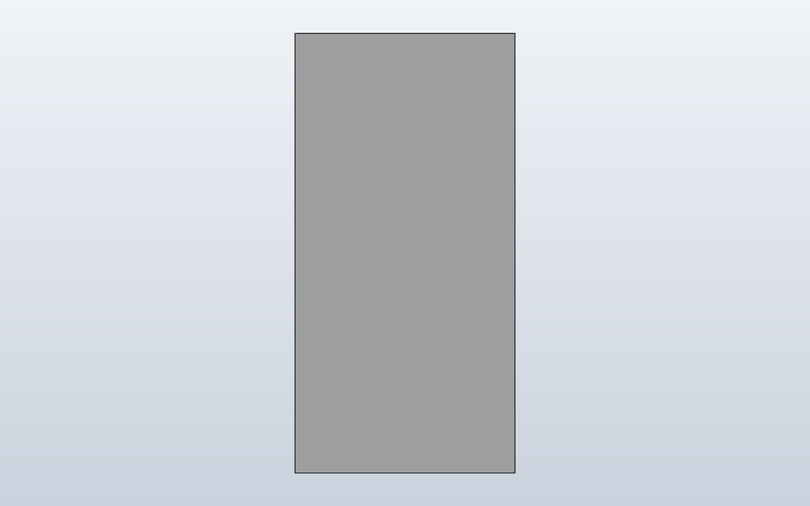
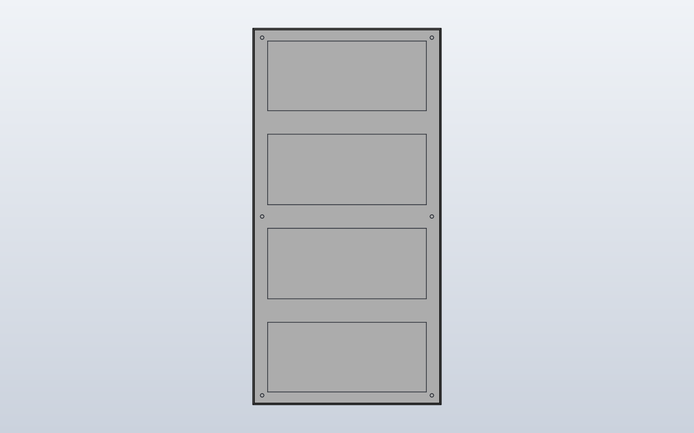

Model preview
Native SolidCraft image, matching this source revision. Click to view full size.
First reusable panel assembly from the existing OpenSCAD reference: a 159.70 × 319.71 × 14.50 mm envelope with four rear pockets, six rear-side blind Ø3 mounting-hole centres and a grey housing material. One native occurrence upright in XZ, with front/rear snapshots; rear-step/rounding details, PCB and connectors are future steps.
Files
Download the original Python sources and generated command plan.
Command JSON describes CAD actions; it is not an already-saved .sc design.
Construction stages
- Create Hub75Panel component
- Sketch and extrude the physical front envelope
- Cut four rear electronics bays from the rear plane
- Cut six blind rear-side Ø3 mounting holes
- Assign grey housing material
- Rotate the single component into the upright XZ plane
- Verify front and rear views in SolidCraft 0.30.1
Open this model in SolidCraft Web
The native editable model is available in SolidCraft’s official web application, hosted at docs.solidcraft.io.
External website: selecting the link below opens the SolidCraft website in a new tab. Your browser downloads the web application from SolidCraft’s servers, which generates network traffic for SolidCraft. The .sc model itself is hosted here on our GitHub Pages site. We do not embed the application.
You are leaving brainboxemb.github.io for docs.solidcraft.io. If you prefer not to use the external web app, download the native .sc file and open it locally in SolidCraft 0.30.1.
Front and rear of the same upright panel


Both are native SolidCraft snapshots of the same single-component design.
Python component — actual geometry
The sketch, extrusion, fillets and other editable CAD features live in components/hub75.py. This file is reused by other models.
"""Single measured HUB75 panel reused in the regression and screen assembly.
Authoritative reference: lib.scad.hub75 / HUB75 frame project v1.2.
The current CAD body is still an approximate rear-tapered envelope with
four rear electronics-bay pockets and six blind mounting bores. The pocket
outlines are currently square-cornered approximations; the rounded/stepped
bay edges, tubes, PCB and connectors still need distinct features.
"""
from scpf import Box, Hole, Sketch, Rectangle2D, Anchor, Direction
class Hub75Panel:
width = 159.70
height = 319.71
depth = 14.50
front_depth = 2.00 # straight front: 1 mm mask + 1 mm PCB
rear_inset = 1.25 # STEP taper: inset on every side at the rear
# Source holes: X=7.85/151.85, Z=7.855/159.855/311.855 from
# the drawing's lower-left corner. They become +/-72 and +/-152
# once the panel is centred on the front plane.
mount_x = 72.0
mount_y = 152.0
hole_diameter = 3.0
# Rear web geometry from v1.2 hub75_panel.scad / supplied STEP reference.
# Source dimensions belong to nominal 160 x 320 mm reference space.
rear_side_rail = 12.5 # each long rail, X direction
rear_end_rail = 10.75 # top/bottom border, long Y direction
rear_crossbar = 20.0 # 3 horizontal ribs, centered at quarters
def build(self):
# Real long sloping sides from Z=2 to Z=14.5, not a short bevel.
body = Box(self.width, self.height, self.depth).taper(
from_z=self.front_depth, inset=self.rear_inset,
)
# Cut the four electronics bays FROM THE REAR, leaving the complete
# front mask + PCB stack at Z=0..2 mm. On the source panel the four
# openings are separated by 3 crossbars, 20 mm wide in reference
# coordinates. A single named sketch creates one editable cut.
#
# OpenSCAD source coordinates use X/Z in the display face; SCPF uses
# X/Y. The reference's 80/160/240 mm rib positions therefore become
# Y=-H/4, Y=0 and Y=+H/4 in portrait orientation.
side = self.rear_side_rail * (159.70 / 160.0)
end = self.rear_end_rail * (319.71 / 320.0)
rib_half = self.rear_crossbar * (319.71 / 320.0) / 2
half_height = self.height / 2
quarter_height = self.height / 4
opening_width = self.width - 2 * side
left = -self.width / 2 + side
bay_ranges = (
(-half_height + end, -quarter_height - rib_half),
(-quarter_height + rib_half, -rib_half),
(rib_half, quarter_height - rib_half),
(quarter_height + rib_half, half_height - end),
)
with Sketch(
name="Rear electronics bays",
on=body,
parent=Anchor.TOP,
) as bays:
for bottom, top in bay_ranges:
bays.add(
Rectangle2D(opening_width, top - bottom),
offset=(left, bottom),
)
body = body - bays.extrude(
self.depth - self.front_depth,
direction=Direction.NEGATIVE,
)
# These four rectangles create the real rails and 3 dividing ribs.
# Pending STEP details: 5 mm rounded corners, the stepped 7.75 mm
# central rail relief, shallow rear recess and reinforcement tubes.
# In particular this is not yet a complete molded HUB75 rear shell.
# The mounting bores are at the BACK of the mechanical housing.
# Our first envelope model previously cut all the way through the
# 2 mm front mask / PCB stack. The real panel must have a solid
# front face: stop the six bores at the START of the rear housing,
# Z=front_depth, without opening the front at Z=0.
#
# OpenSCAD builds separate mounting tubes and front layers. A blind
# bore in the simplified single-body envelope preserves that
# mechanical intent without inventing the missing rear structure.
rear_bore_depth = self.depth - self.front_depth
for x in (-self.mount_x, self.mount_x):
for y in (-self.mount_y, 0, self.mount_y):
body = body + Hole(
d=self.hole_diameter,
depth=rear_bore_depth,
direction=(0, 0, -1),
).at(x, y, self.depth)
# One gray housing material. Detailed PCB/front/connector colors
# require separate native bodies in a later panel-model iteration.
return body.with_material(
"HUB75 housing", density_g_cm3=1.20, color="#B8B8B8"
)
Model script — how the component is used
model.py is the entry point that SCPF executes. It imports the shared definition and places it into the CAD model; it is not a second copy of the component geometry.
"""One reusable HUB75 mechanical component, shown upright in world XZ.
A single panel is a component. A screen assembly is responsible for copies.
The detailed panel definition stays native XY with rear depth in +Z; its
occurrence stands upright with +90 degrees about X, front facing world +Y.
"""
from scpf import component
from components.hub75 import Hub75Panel as Hub75PanelDefinition
Hub75Panel = component(Hub75PanelDefinition, include="*")
class SingleHub75Panel:
def build(self):
# Native panel height is centred around Y=0; rotate that height into
# vertical world Z, then centre it in the 320 mm nominal display grid.
return Hub75Panel().rotate(axis=(1, 0, 0), degrees=90).move(z=160)
SingleHub75Panel()
Native SolidCraft command sequence (SCPF)
- Named CAD parameterparameters.add · name: Hub75Panel_width
{ "command": "parameters.add", "params": { "name": "Hub75Panel_width", "expression": "159.7", "unit": "mm" } } - Named CAD parameterparameters.add · name: Hub75Panel_height
{ "command": "parameters.add", "params": { "name": "Hub75Panel_height", "expression": "319.71", "unit": "mm" } } - Named CAD parameterparameters.add · name: Hub75Panel_depth
{ "command": "parameters.add", "params": { "name": "Hub75Panel_depth", "expression": "14.5", "unit": "mm" } } - Named CAD parameterparameters.add · name: Hub75Panel_front_depth
{ "command": "parameters.add", "params": { "name": "Hub75Panel_front_depth", "expression": "2", "unit": "mm" } } - Named CAD parameterparameters.add · name: Hub75Panel_rear_inset
{ "command": "parameters.add", "params": { "name": "Hub75Panel_rear_inset", "expression": "1.25", "unit": "mm" } } - Named CAD parameterparameters.add · name: Hub75Panel_rear_side_rail
{ "command": "parameters.add", "params": { "name": "Hub75Panel_rear_side_rail", "expression": "12.5", "unit": "mm" } } - Named CAD parameterparameters.add · name: Hub75Panel_rear_crossbar
{ "command": "parameters.add", "params": { "name": "Hub75Panel_rear_crossbar", "expression": "20", "unit": "mm" } } - Named CAD parameterparameters.add · name: Hub75Panel_rear_end_rail
{ "command": "parameters.add", "params": { "name": "Hub75Panel_rear_end_rail", "expression": "10.75", "unit": "mm" } } - Named CAD parameterparameters.add · name: Hub75Panel_hole_diameter
{ "command": "parameters.add", "params": { "name": "Hub75Panel_hole_diameter", "expression": "3", "unit": "mm" } } - Named CAD parameterparameters.add · name: Hub75Panel_mount_x
{ "command": "parameters.add", "params": { "name": "Hub75Panel_mount_x", "expression": "72", "unit": "mm" } } - Named CAD parameterparameters.add · name: Hub75Panel_mount_y
{ "command": "parameters.add", "params": { "name": "Hub75Panel_mount_y", "expression": "152", "unit": "mm" } } - Create reusable componentcomponent.create · name: Hub75Panel
{ "command": "component.create", "params": { "name": "Hub75Panel", "grounded": true } } - Create sketchsketch.create · name: Hub75Panel footprint, plane: XY
{ "command": "sketch.create", "params": { "plane": "XY", "name": "Hub75Panel footprint" } } - Rectanglesketch.rectangle.two_point
{ "command": "sketch.rectangle.two_point", "params": { "p0": [ "-Hub75Panel_width / 2", "-Hub75Panel_height / 2" ], "p1": [ "Hub75Panel_width / 2", "Hub75Panel_height / 2" ] } } - Finish sketchsketch.finish
{ "command": "sketch.finish", "params": {} } - Extrusion / cutsolid.extrude · body_name: Hub75Panel
{ "command": "solid.extrude", "params": { "distance": "Hub75Panel_front_depth", "body_name": "Hub75Panel" } } - Create sketchsketch.create · name: Hub75Panel rear start, plane: XY
{ "command": "sketch.create", "params": { "plane": "XY", "name": "Hub75Panel rear start", "offset": "Hub75Panel_front_depth" } } - Rectanglesketch.rectangle.two_point
{ "command": "sketch.rectangle.two_point", "params": { "p0": [ "-Hub75Panel_width / 2", "-Hub75Panel_height / 2" ], "p1": [ "Hub75Panel_width / 2", "Hub75Panel_height / 2" ] } } - Finish sketchsketch.finish
{ "command": "sketch.finish", "params": {} } - Create sketchsketch.create · name: Hub75Panel rear perimeter, plane: XY
{ "command": "sketch.create", "params": { "plane": "XY", "name": "Hub75Panel rear perimeter", "offset": "Hub75Panel_depth" } } - Rectanglesketch.rectangle.two_point
{ "command": "sketch.rectangle.two_point", "params": { "p0": [ "(-Hub75Panel_width / 2) + (Hub75Panel_rear_inset)", "(-Hub75Panel_height / 2) + (Hub75Panel_rear_inset)" ], "p1": [ "(Hub75Panel_width / 2) - (Hub75Panel_rear_inset)", "(Hub75Panel_height / 2) - (Hub75Panel_rear_inset)" ] } } - Finish sketchsketch.finish
{ "command": "sketch.finish", "params": {} } - solid.loftsolid.loft · operation: join
{ "command": "solid.loft", "params": { "sections": [ { "sketch": "Hub75Panel rear start" }, { "sketch": "Hub75Panel rear perimeter" } ], "operation": "join", "targets": [ "Hub75Panel" ] } } - Create sketchsketch.create · name: Rear electronics bays, plane: XY
{ "command": "sketch.create", "params": { "plane": "XY", "name": "Rear electronics bays", "offset": "(Hub75Panel_depth)" } } - Rectanglesketch.rectangle.two_point
{ "command": "sketch.rectangle.two_point", "params": { "p0": [ "((-(Hub75Panel_width)) / 2) + (Hub75Panel_width / 2) + ((-(Hub75Panel_width)) / 2) + (Hub75Panel_rear_side_rail * 0.998125)", "((-(Hub75Panel_height)) / 2) + (Hub75Panel_height / 2) + (-(Hub75Panel_height / 2)) + (Hub75Panel_rear_end_rail * 0.999094)" ], "p1": [ "((-(Hub75Panel_width)) / 2) + (Hub75Panel_width / 2) + ((-(Hub75Panel_width)) / 2) + (Hub75Panel_rear_side_rail * 0.998125) + (Hub75Panel_width - ((Hub75Panel_rear_side_rail * 0.998125) * 2))", "((-(Hub75Panel_height)) / 2) + (Hub75Panel_height / 2) + (-(Hub75Panel_height / 2)) + (Hub75Panel_rear_end_rail * 0.999094) + ((-(Hub75Panel_height / 4)) - ((Hub75Panel_rear_crossbar * 0.999094) / 2)) - ((-(Hub75Panel_height / 2)) + (Hub75Panel_rear_end_rail * 0.999094))" ] } } - Rectanglesketch.rectangle.two_point
{ "command": "sketch.rectangle.two_point", "params": { "p0": [ "((-(Hub75Panel_width)) / 2) + (Hub75Panel_width / 2) + ((-(Hub75Panel_width)) / 2) + (Hub75Panel_rear_side_rail * 0.998125)", "((-(Hub75Panel_height)) / 2) + (Hub75Panel_height / 2) + (-(Hub75Panel_height / 4)) + ((Hub75Panel_rear_crossbar * 0.999094) / 2)" ], "p1": [ "((-(Hub75Panel_width)) / 2) + (Hub75Panel_width / 2) + ((-(Hub75Panel_width)) / 2) + (Hub75Panel_rear_side_rail * 0.998125) + (Hub75Panel_width - ((Hub75Panel_rear_side_rail * 0.998125) * 2))", "((-(Hub75Panel_height)) / 2) + (Hub75Panel_height / 2) + (-(Hub75Panel_height / 4)) + ((Hub75Panel_rear_crossbar * 0.999094) / 2) + (-((Hub75Panel_rear_crossbar * 0.999094) / 2)) - ((-(Hub75Panel_height / 4)) + ((Hub75Panel_rear_crossbar * 0.999094) / 2))" ] } } - Rectanglesketch.rectangle.two_point
{ "command": "sketch.rectangle.two_point", "params": { "p0": [ "((-(Hub75Panel_width)) / 2) + (Hub75Panel_width / 2) + ((-(Hub75Panel_width)) / 2) + (Hub75Panel_rear_side_rail * 0.998125)", "((-(Hub75Panel_height)) / 2) + (Hub75Panel_height / 2) + ((Hub75Panel_rear_crossbar * 0.999094) / 2)" ], "p1": [ "((-(Hub75Panel_width)) / 2) + (Hub75Panel_width / 2) + ((-(Hub75Panel_width)) / 2) + (Hub75Panel_rear_side_rail * 0.998125) + (Hub75Panel_width - ((Hub75Panel_rear_side_rail * 0.998125) * 2))", "((-(Hub75Panel_height)) / 2) + (Hub75Panel_height / 2) + ((Hub75Panel_rear_crossbar * 0.999094) / 2) + ((Hub75Panel_height / 4) - ((Hub75Panel_rear_crossbar * 0.999094) / 2)) - ((Hub75Panel_rear_crossbar * 0.999094) / 2)" ] } } - Rectanglesketch.rectangle.two_point
{ "command": "sketch.rectangle.two_point", "params": { "p0": [ "((-(Hub75Panel_width)) / 2) + (Hub75Panel_width / 2) + ((-(Hub75Panel_width)) / 2) + (Hub75Panel_rear_side_rail * 0.998125)", "((-(Hub75Panel_height)) / 2) + (Hub75Panel_height / 2) + (Hub75Panel_height / 4) + ((Hub75Panel_rear_crossbar * 0.999094) / 2)" ], "p1": [ "((-(Hub75Panel_width)) / 2) + (Hub75Panel_width / 2) + ((-(Hub75Panel_width)) / 2) + (Hub75Panel_rear_side_rail * 0.998125) + (Hub75Panel_width - ((Hub75Panel_rear_side_rail * 0.998125) * 2))", "((-(Hub75Panel_height)) / 2) + (Hub75Panel_height / 2) + (Hub75Panel_height / 4) + ((Hub75Panel_rear_crossbar * 0.999094) / 2) + ((Hub75Panel_height / 2) - (Hub75Panel_rear_end_rail * 0.999094)) - ((Hub75Panel_height / 4) + ((Hub75Panel_rear_crossbar * 0.999094) / 2))" ] } } - Finish sketchsketch.finish
{ "command": "sketch.finish", "params": {} } - Extrusion / cutsolid.extrude · name: Rear electronics bays, direction: negative, operation: cut
{ "command": "solid.extrude", "params": { "operation": "cut", "targets": [ "Hub75Panel" ], "name": "Rear electronics bays", "distance": "Hub75Panel_depth - (Hub75Panel_front_depth)", "direction": "negative" } } - Native Hole featuresolid.hole · direction: [0.0, 0.0, -1.0]
{ "command": "solid.hole", "params": { "position": [ "-(Hub75Panel_mount_x)", "-(Hub75Panel_mount_y)", "Hub75Panel_depth" ], "diameter": "Hub75Panel_hole_diameter", "targets": [ "Hub75Panel" ], "depth": "Hub75Panel_depth - (Hub75Panel_front_depth)", "direction": [ 0.0, 0.0, -1.0 ] } } - Native Hole featuresolid.hole · direction: [0.0, 0.0, -1.0]
{ "command": "solid.hole", "params": { "position": [ "-(Hub75Panel_mount_x)", 0, "Hub75Panel_depth" ], "diameter": "Hub75Panel_hole_diameter", "targets": [ "Hub75Panel" ], "depth": "Hub75Panel_depth - (Hub75Panel_front_depth)", "direction": [ 0.0, 0.0, -1.0 ] } } - Native Hole featuresolid.hole · direction: [0.0, 0.0, -1.0]
{ "command": "solid.hole", "params": { "position": [ "-(Hub75Panel_mount_x)", "Hub75Panel_mount_y", "Hub75Panel_depth" ], "diameter": "Hub75Panel_hole_diameter", "targets": [ "Hub75Panel" ], "depth": "Hub75Panel_depth - (Hub75Panel_front_depth)", "direction": [ 0.0, 0.0, -1.0 ] } } - Native Hole featuresolid.hole · direction: [0.0, 0.0, -1.0]
{ "command": "solid.hole", "params": { "position": [ "Hub75Panel_mount_x", "-(Hub75Panel_mount_y)", "Hub75Panel_depth" ], "diameter": "Hub75Panel_hole_diameter", "targets": [ "Hub75Panel" ], "depth": "Hub75Panel_depth - (Hub75Panel_front_depth)", "direction": [ 0.0, 0.0, -1.0 ] } } - Native Hole featuresolid.hole · direction: [0.0, 0.0, -1.0]
{ "command": "solid.hole", "params": { "position": [ "Hub75Panel_mount_x", 0, "Hub75Panel_depth" ], "diameter": "Hub75Panel_hole_diameter", "targets": [ "Hub75Panel" ], "depth": "Hub75Panel_depth - (Hub75Panel_front_depth)", "direction": [ 0.0, 0.0, -1.0 ] } } - Native Hole featuresolid.hole · direction: [0.0, 0.0, -1.0]
{ "command": "solid.hole", "params": { "position": [ "Hub75Panel_mount_x", "Hub75Panel_mount_y", "Hub75Panel_depth" ], "diameter": "Hub75Panel_hole_diameter", "targets": [ "Hub75Panel" ], "depth": "Hub75Panel_depth - (Hub75Panel_front_depth)", "direction": [ 0.0, 0.0, -1.0 ] } } - Create physical materialmaterial.create · name: HUB75 housing
{ "command": "material.create", "params": { "name": "HUB75 housing", "density_g_cm3": 1.2, "color": "#B8B8B8" } } - Assign materialmaterial.assign
{ "command": "material.assign", "params": { "bodies": [ "Hub75Panel" ], "material": "HUB75 housing" } } - Activate component / rootcomponent.activate
{ "command": "component.activate", "params": { "component": "root" } } - Move component occurrenceoccurrence.move
{ "command": "occurrence.move", "params": { "occurrence": "Hub75Panel:1", "translate": [ 0.0, 0.0, 160.0 ], "axis": [ 1.0, 0.0, 0.0 ], "angle": "90 deg", "move_grounded": true } }